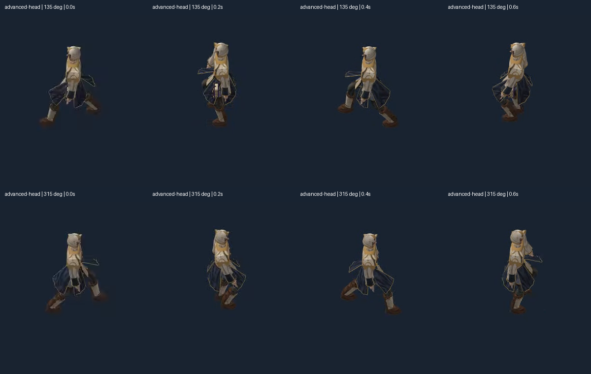
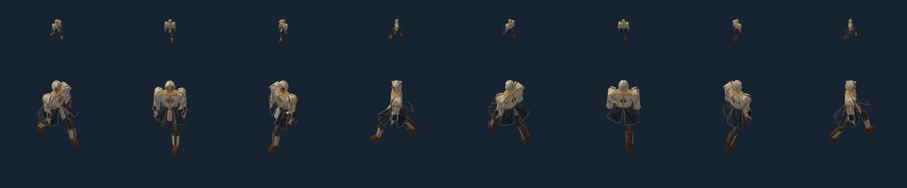

Controlled cause, source motion and576/576walk raster comparisons PASS. Godot shipping target; Pixi test harness. The repaired walk restores readable support exchange and removes the severe split-leg collapse. This is a scoped gait repair; full garment motion polish, turn transitions, complete outfit surface fit and production character approval remain open.
The old author reused the0.4-second stance duration as a Boolean contact flag. True then behaved as1second, longer than the entire0.8-second walk cycle. An explicit1.0-second control reproduces every old walk palette exactly and never enters swing. A separate duration constant restores alternating feet. Hip excursion falls from74.06cm to9.39cm; minimum hip height rises from30.94cm to104.60cm. Idle and cast palette bytes are unchanged.
Native video samples, view135°, same scale. The old evidence remains intact.
0°,45°,90°,135°,180°,225°,270°,315° left to right; top50px body axis, lower150px. Native2400×500geometry render, horizontal scroll. Camera tracks the2m/s world root. Each saved clip contains approximately two0.8-second cycles; recording endpoints may omit a fraction of a frame. Deterministic48-frame audit is separate from encoded video. No production60fps or fullscreen resolution claim.
No bitmap resizing. Cloth remains deliberately simple and stiff; this test qualifies the repaired gait, not finished secondary cloth animation.

Four independent Blender poses × eight views × two scales × three outfit/head conditions × three backgrounds =576 comparisons. All pass the unchangedMAE≤1 and>8channel-error fraction≤2% thresholds. MaximumMAE0.3179, maximumfraction0.4690%. Wrong-pose and20pxgear-shift controls fail as intended. The six E05Y cast135° failures remain unresolved; this repair does not claim to fix them.

Report · Receipt · Controlled cause · Complete source and bounds checks · Raster results · Preserved E05Y failures · Live Pixi controls (local HTTP required)